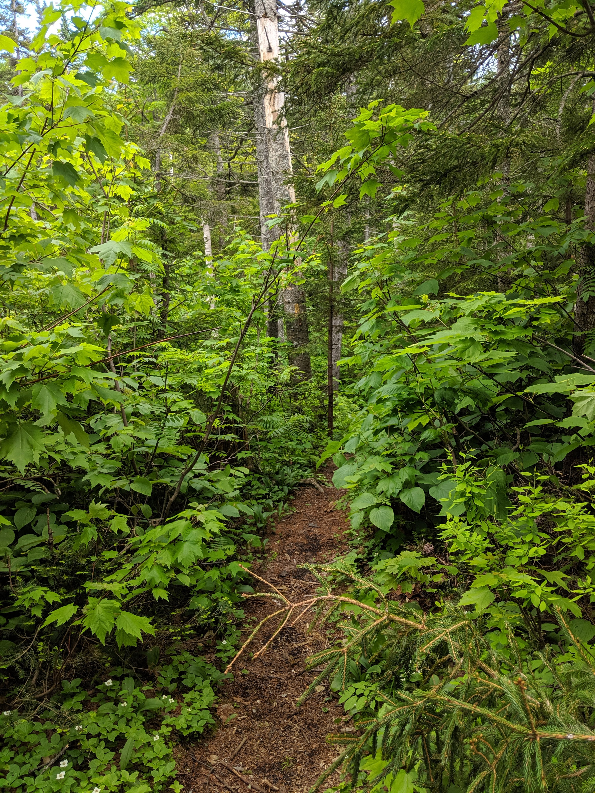
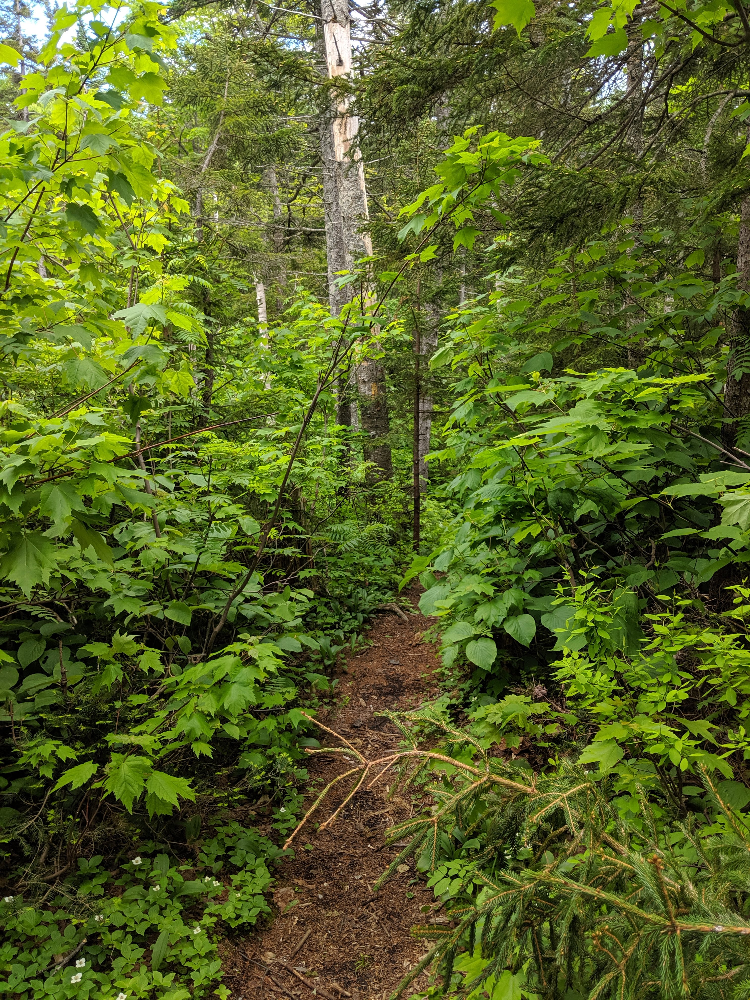

Distance
Distance Elevation
Elevation Observed Wildlife
Observed Wildlifeto
Day 1 - 11.0 miles - 8 hours, 45 minutes
This hike lives up to it’s name. When I was planning this trip, my objective was to find the most wild wilderness. As I scanned my planning materials, the name of this area jumped off the map, it has “wild” in the name twice! As it turns out, I bit off a bit more “wild” than I could chew and ended up spitting out some of this hike. I cut out a night early and skipped much of the hike and a couple mountains.

I parked at the Nineteen Mile Brook Trailhead and began the tough climb to Mount Hight and Carter Dome. The forest was at its peak moisture and density. A persistent green covered the entirety of my hike. Much of the ascent followed Nineteen Mile Brook, which was flowing strongly and providing terrific scenery.

The grade increased constantly and imperceptibly as I turned left on Carter Dome Trail. I was gassed as I approached Mount Hight. After turning right on Carter Moriah Trail, I enjoyed the boreal forest. I had pushed myself on the ascent and looked forward to sitting down, feeling the mountain breeze, chowing on my snack, and looking for miles. Unfortunately, my experience was far from what I had hoped. This was my only visit to the Whites in which a summit was completely devoid of moving air. This was exacerbated by the relentless flies that bombarded me in the mountain clearing. I couldn’t stand still without wildly waving my shirt to keep the insects off my face.
I continued to Carter Dome in hopes that its summit would provide a breeze and relief from the bugs. Unfortunately, that was not the case. I was exhausted from the climb and unsure I could manage the swarms for two nights. I deviated from my plan and started to descent via Carter-Moriah back to my car. The insects relented and my disposition flipped so I returned course and started my descent down Rainbow Trail to penetrate the Wild River Wilderness.
Rainbow Trail was the highlight of this hike. The forest was lush, yet open, with tons of ferns. Check out this virtual reality photo for a true sense of its beauty. Unfortunately the highlight ended with the trail.
 

At the trail’s terminus, I turned left onto Wild River Wilderness. The trail was soft, and flat out muddy in stretches. There were some puncheons for relief. I was looking forward to reaching Perkin’s Notch Campsite to rest and enjoy my solitude. As I approached it I met a group of tourists who were unhappy with their guide and it was apparent they planned to camp at Perkin’s Notch. The site was not too spacious and I was sure I wouldn’t get the solitude I sought. Two additional miles separated me to the next campsite and I continued on.
The clearing at No Ketchum Pond was pretty and provided views back toward Carter Dome and Mount Height. The trail crossed the Wild River a few times and I did my best to keep my boots dry, a tough task on the wet trail. Eventually I reached Spruce Brook Campsite. After claiming a tentsite, I rinsed the excessive sweat off my body at Spruce Brook’s confluence with the Wild River. I set up my hammock along the Wild River and did my best to tolerate the mosquitos and read my book. On the climb back up to my tentside I took a little tumble on the loose soil, lost my footwear and cursed my decision to buy camouflage crocs as I scrambled to find my damned shoes.

Day 2 - 11.6 miles - 9 hours, 57 minutes
(Click the above image for a virtual reality picure of the gorgeous confluence)
I awoke, looking forward to cruising through the flat Wild River Trail. I began my hike just after 7AM and resumed my journey on the damp trail. So much growth bled into the trail and it didn’t take long for my legs to get soaked by the condensation. When I crossed the intersection with Black Angel Trail, I opted to take the Highwater Trail, guessing it would be dryer (I guessed wrong). There was no escaping the mud. At one point, I was going uphill and sank knee deep in mud. I never worked so hard on a flat trail. The trail also was extremely difficult to follow and at times it was completely imperceptable from the brush.
For a moment, I thought the trail was finally descending the river bank to cross Moriah Brook Trail. By the time I had realized my mistake, I was too far down the soft bank to easily return to the impossible to follow trail. When I reached the water, I realized the river was too strong and deep to ford. I was stuck, this was the low point of my hike.
I did my best to rock hop along the shore but it was arduous along the steep river bank. I realized staying out of the water was futile and equipped my feet with my crocs. Eventually, I made it to a fallen tree where I could rest. Shortly after, I forded to the opposite shore and a slightly more dry trail. (This hike continues to test my patience over a year later as Google Docs keeps crashing as I type this).
I had spent three hours covering three miles that I had expected to finish in a little over an hour. My boots were completely soaked with mud and I decided to cut my hike short and seek a hot shower and a dry apartment. I had to ford back across the Wild River again to reach Moriah Brook Trail. After a mile, I passed the unimpressive Moriah Gorge later reached a tiny waterfall. I rinsed off my legs and took my final significant rest.
Honestly, I don’t remember anything about sloshing through the last six miles with my wet boots. I do know that once I reached the notch between Imp and Moriah I crossed Moriah-Carter Trail to Stony Brook Trail and descended to the Stony Brook Trailhead. I hitchhiked and only had to wait for a handful of cars before a friendly couple taxied me to my car. The Wild River Wilderness was indeed wild and, in the end, kicked my civilized butt.